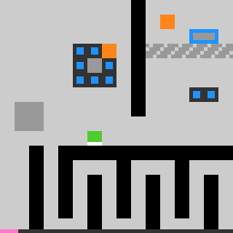

wa30
Drag every doughnut into a blue-framed container; the level is won when all sit there and nothing is carried.
9 levels · 8 rules · all levels replayed in Lean
Replay
The certified run that cleared every level, one action at a time.

Press Play or step to load the run. Keys, while the player is on screen: ← → step, Space play / pause. A click is circled; cells that changed are outlined.
How it plays
The green square is the player; the white edge on top shows which way it faces. Every doughnut has to be brought into a blue-framed container. With empty hands, an arrow key turns the player and, where the way is open, moves it one cell; next to a piece of cargo, the action key grabs it, after which the arrow keys move the player and the cargo together, and pressing the action key again lets go. Cargo can enter fenced areas; the player cannot. After every step each mole on the field moves once: the orange helpers carry cargo that is not in a container into one, and the purple thieves carry cargo back to their own nest, even cargo the player is holding; pressing the action key while facing a thief knocks it out. The level is won when every doughnut sits in a container, the player holds nothing and no mole is carrying anything. The pink timer bar along the bottom shortens with each step; when the steps run out before the level is won, the game is over.

Model
The final model: 8 object types and 8 rules. Each rule is a Python check against every recorded step; 7 of them are translated into Lean (the paper's per-game table). Code under a rule is the file of the same name in the agent's Lean project.
Object types
- Player
playerWhich cell the green square is on.Lean · Cell.lean
-- St.player : Cell structure Cell where r : Nat c : Nat deriving DecidableEq, Repr - Facing
facingWhich way the square's white edge points; it fixes the cell in front.Lean · Dir.lean
-- St.facing : Dir inductive Dir where | up | down | left | right deriving DecidableEq, Repr - Holding
holdingWhether the doughnut in front of the player is grabbed.Lean · Hand.lean
-- St.holding : Hand abbrev Hand := Bool - Doughnuts
donutsThe cell each doughnut is on.Lean · Cell.lean
-- St.donuts : List Cell structure Cell where r : Nat c : Nat deriving DecidableEq, Repr - Carried cargo
carriedWhich doughnuts are riding on a mole's back.Python only - Helpers
helpersWhich cell each orange mole is on.Python only - Thieves
thievesWhich cell each purple mole is on.Python only - Timer bar
timerHow much of the pink bar along the bottom remains.Lean · World.lean
-- Seen.timer : Nat structure Seen where player : Cell facing : Dir rings : List (Cell × Nat) moles : List (Cell × Role × Bool) timer : Nat deriving Repr
Rules
walkEmpty-handed, an arrow key turns the player and moves it one cell where open.Python
from __future__ import annotations from .._common import skip_breaks, world … … LEAN = "Rule/Player/Walk.lean" HISTORY = [ … … … … ] def scope_(prev, action, nxt, ctx): why = skip_breaks(ctx) if why: return why if action not in ("ACTION1", "ACTION2", "ACTION3", "ACTION4"): … if world(prev).holding: … return None def assert_(prev, action, nxt, ctx): from derive.hidden import lift from derive.player_step import player_step wp, wn = world(prev), world(nxt) cands = lift(wp, ctx["board"]) if not cands: return "NA" t = player_step(cands[0], action, ctx["board"]) return "TRUE" if (t.player, t.facing) == (wn.player, wn.facing) else "FALSE"Lean · Walk.lean
import Obj.World namespace Game def St.freeFor (b : Board) (s : St) (x : Cell) : Bool := b.walkable x && !s.donuts.contains x && !(s.moles.any (fun m => m.pos == x)) def walk (b : Board) (s : St) (d : Dir) : St := match s.player.go d with | some t => if s.freeFor b t then { s with facing := d, player := t } else { s with facing := d } | none => { s with facing := d } end GamedragHolding cargo, an arrow key moves the player and the cargo together.Python
from __future__ import annotations from .._common import skip_breaks, world … … LEAN = "Rule/Player/Drag.lean" HISTORY = [ … … ] def scope_(prev, action, nxt, ctx): why = skip_breaks(ctx) if why: return why if action not in ("ACTION1", "ACTION2", "ACTION3", "ACTION4"): … if not world(prev).holding: … return None def assert_(prev, action, nxt, ctx): from derive.hidden import lift from derive.player_step import player_step wp, wn = world(prev), world(nxt) cands = lift(wp, ctx["board"]) if not cands: return "NA" t = player_step(cands[0], action, ctx["board"]) ok = (t.player, t.facing) == (wn.player, wn.facing) and (wn.player + wn.facing) in wn.donuts return "TRUE" if ok else "FALSE"Lean · Drag.lean
import Obj.World import Rule.Player.Walk namespace Game def dragOk (b : Board) (s : St) (f t h : Cell) : Bool := (t == f || s.freeFor b t) && (h == s.player || (b.carryable h && !s.donuts.contains h && !(s.moles.any (fun m => m.pos == h)))) def drag (b : Board) (s : St) (d : Dir) : St := match s.front, s.player.go d with | some f, some t => match f.go d with | some h => if dragOk b s f t h then { s with player := t, donuts := s.donuts.map (fun c => if c == f then h else c) } else s | none => s | _, _ => s end GamepressThe action key lets go, grabs cargo, or knocks out a thief.Python
from __future__ import annotations from .._common import skip_breaks, world … … LEAN = "Rule/Player/Press.lean" HISTORY = [ … … … … ] def scope_(prev, action, nxt, ctx): why = skip_breaks(ctx) if why: return why if not action.startswith("ACTION5"): … return None def assert_(prev, action, nxt, ctx): wp, wn = world(prev), world(nxt) if (wn.player, wn.facing) != (wp.player, wp.facing): return "FALSE" f = wp.player + wp.facing if wp.holding: ok = not wn.holding elif f in wp.donuts: ok = wn.holding or any(t + d == f for t in wn.thieves for d in _dirs()) elif f in wp.thieves: ok = len(wn.thieves) == len(wp.thieves) - 1 else: ok = not wn.holding return "TRUE" if ok else "FALSE" def _dirs(): from objects.geometry.dir import ORDER return ORDERLean · Press.lean
import Obj.World namespace Game def press (s : St) : St := if s.holding then { s with holding := false } else match s.front with | none => s | some f => if s.donuts.contains f then { s with holding := true, moles := s.moles.map (fun m => if m.load == some f then { m with cargo := none } else m) } else if s.moles.any (fun m => m.pos == f && m.role == .thief) then { s with moles := s.moles.filter (fun m => !(m.pos == f && m.role == .thief)) } else s end Gamemoles_actAfter the player acts, each mole moves once in turn.Python
from __future__ import annotations from .._common import skip_breaks, world … … LEAN = "Rule/Moles/MolesAct.lean" HISTORY = [ … … … … … … … … … ] … def scope_(prev, action, nxt, ctx): why = skip_breaks(ctx) if why: return why wp = world(prev) if not (wp.helpers or wp.thieves or wp.carried): … return None def assert_(prev, action, nxt, ctx): from derive.hidden import lift, observe from derive.npc import npc_step from derive.player_step import player_step b = ctx["board"] wp, wn = world(prev), world(nxt) seen_player = False for s in lift(wp, b): t = player_step(s, action, b) if (t.player, t.facing) != (wn.player, wn.facing): continue seen_player = True for u in npc_step(t, b, branch=True): o = observe(u, b) if (o.helpers, o.thieves, o.donuts, o.carried, o.holding) == \ (wn.helpers, wn.thieves, wn.donuts, wn.carried, wn.holding): return "TRUE" return "FALSE" if seen_player else "NA"Lean · MolesAct.lean
import Obj.World import Rule.Moles.Route import Rule.Moles.Targets namespace Game def nth (ms : List Mole) : Nat → Option Mole | i => (ms.drop i).head? def posIn : List Cell → Cell → Nat | [], _ => 0 | y :: ys, x => if y == x then 0 else posIn ys x + 1 def pickLast (ds : List Cell) : List Cell → Option Cell | [] => none | x :: xs => match pickLast ds xs with | none => some x | some y => if posIn ds x ≥ posIn ds y then some x else some y def othersMask (s : St) (m : Mole) : Nat := maskOf (s.moles.map (·.pos)) ^^^ (1 <<< m.pos.idx) def carryTurn (b : Board) (s : St) (i : Nat) (m : Mole) (o : Dir) : St := match m.pos.go o with | none => s | some cc => if isHome b m.role cc then { s with moles := s.moles.set i { m with cargo := none }, donuts := s.donuts.erase cc ++ [cc] } else let bl0 := maskOf s.donuts ||| othersMask s m ||| (1 <<< s.player.idx) let blocked := if bl0.testBit cc.idx then bl0 ^^^ (1 <<< cc.idx) else bl0 let ok := fun (v : Cell) => b.walkable v && !v.inMask blocked && (match v.go o with | some c2 => b.carryable c2 && (!c2.inMask blocked || c2 == m.pos) | none => false) let goal := fun (v : Cell) => match v.go o with | some c2 => isHome b m.role c2 && !s.donuts.contains c2 | none => false match firstStep ok goal m.pos with | none => s | some nx => match nx.go o with | none => s | some nc => { s with moles := s.moles.set i { m with pos := nx }, donuts := s.donuts.map (fun c => if c == cc then nc else c) } def seekTurn (b : Board) (s : St) (i : Nat) (m : Mole) : St × Bool := let adj := Dir.order.filterMap (fun d => match m.pos.go d with | some c => if isTarget b s m c then some c else none | none => none) match pickLast s.donuts adj with | some c => let ms := s.moles.map (fun mm => if mm.load == some c then { mm with cargo := none } else mm) let hold := if s.holding && s.front == some c then false else s.holding ({ s with moles := ms.set i { m with cargo := Dir.between m.pos c }, holding := hold }, true) | none => let tmask := s.donuts.foldl (fun acc c => if isTarget b s m c then acc ||| (1 <<< c.idx) else acc) 0 if tmask == 0 then (s, false) else let blocked := maskOf s.donuts ||| othersMask s m ||| (1 <<< s.player.idx) let ok := fun (v : Cell) => b.walkable v && !v.inMask blocked let goal := fun (v : Cell) => Dir.order.any (fun d => match v.go d with | some c => c.inMask tmask | none => false) match firstStep ok goal m.pos with | none => (s, false) | some nx => ({ s with moles := s.moles.set i { m with pos := nx } }, false) def turnOne (b : Board) (acc : St × Bool × Bool) (i : Nat) : St × Bool × Bool := match nth acc.1.moles i with | none => acc | some m => if (m.role == .helper && acc.2.1) || (m.role == .thief && acc.2.2) then acc else match m.cargo with | some o => (carryTurn b acc.1 i m o, acc.2.1, acc.2.2) | none => let r := seekTurn b acc.1 i m if r.2 then (r.1, acc.2.1 || m.role == .helper, acc.2.2 || m.role == .thief) else (r.1, acc.2.1, acc.2.2) def molesAct (b : Board) (s : St) : List Cell × List Mole × Bool := let idx := List.range s.moles.length let order := idx.filter (fun i => (nth s.moles i).map (·.role) == some .helper) ++ idx.filter (fun i => (nth s.moles i).map (·.role) == some .thief) let r := order.foldl (turnOne b) (s, false, false) (r.1.donuts, r.1.moles, r.1.holding) end Gametimer_tickEach key press shortens the timer bar proportionally.Python
from __future__ import annotations from .._common import skip_breaks, world … … LEAN = "Rule/Clock/TimerTick.lean" HISTORY = [ … … … ] def scope_(prev, action, nxt, ctx): return skip_breaks(ctx) def assert_(prev, action, nxt, ctx): from derive.timer import bar, steps_for B = ctx["board"].budget wp, wn = world(prev), world(nxt) ks = steps_for(wp.timer, B) if not ks: return "FALSE" return "TRUE" if any(bar(k + 1, B) == wn.timer for k in ks) else "FALSE"Lean · TimerTick.lean
import Obj.World namespace Game def tick (s : St) : St := { s with used := s.used + 1 } end Gametime_upThe game is over when the steps run out before the level is won.Python
from __future__ import annotations from .._common import skip_breaks, world … … LEAN = "Rule/Clock/TimeUp.lean" HISTORY = [ … … … ] def scope_(prev, action, nxt, ctx): return skip_breaks(ctx) def assert_(prev, action, nxt, ctx): from derive.timer import bar, steps_for B = ctx["board"].budget wp, wn = world(prev), world(nxt) over = ctx.get("state_next") == "GAME_OVER" for k in steps_for(wp.timer, B): if bar(k + 1, B) == wn.timer and (k + 1 >= B) == over: return "TRUE" return "FALSE"Lean · TimeUp.lean
import Obj.World namespace Game def timeUp (b : Board) (s : St) : Bool := decide (b.budget ≤ s.used) end Gamelevel_upThe level is won exactly when every doughnut is placed in a container.Python
from __future__ import annotations from .._common import RESET, world … … … … LEAN = "Rule/Goal/LevelUp.lean" HISTORY = [ … … … … ] … def scope_(prev, action, nxt, ctx): if ctx.get("tag") == "reset": return RESET return None def assert_(prev, action, nxt, ctx): from derive.hidden import lift, observe from derive.outcome import full_step b = ctx["board"] wp = world(prev) up = ctx.get("tag") == "levelup" wn = None if up else world(nxt) matched = False for s in lift(wp, b): for res, u in full_step(s, action, b, branch=True): if up: if res == "won": return "TRUE" continue o = observe(u, b) if (o.player, o.facing, o.holding, o.donuts, o.carried, o.helpers, o.thieves) == \ (wn.player, wn.facing, wn.holding, wn.donuts, wn.carried, wn.helpers, wn.thieves): matched = True if res != "won": return "TRUE" if up: return "FALSE" return "FALSE" if matched else "NA"Lean · LevelUp.lean
import Obj.World namespace Game def isGoal (b : Board) (s : St) : Bool := !s.holding && s.moles.all (fun m => m.cargo == none) && s.donuts.all (fun c => c.inMask b.home) end Gamereset_to_startAfter a reset, the screen returns to this level's opening frame.Python onlyPython
from __future__ import annotations from .._common import world … … … … … … LEAN = None HISTORY = [ … ] def scope_(prev, action, nxt, ctx): … def assert_(prev, action, nxt, ctx): st = ctx.get("start") if st is None: return "NA" return "TRUE" if world(nxt) == st else "FALSE"
Code is shown with comments and the agent's notes removed; the files as written are in the archive under Check it yourself.
Proof
For every level, Lean starts from the level's first screen, applies the model's rules to the certified actions, and checks that every computed state agrees with the recorded frame on the components the model represents, and that the last one wins. Each theorem is closed by the Lean kernel and is a statement about the learned model.
Every level can be won
theorem Game.Lv0.winnable :
∃ as : List Game.Act, Game.everGoal Game.step Game.Lv0.board Game.Lv0.start as = true := …theorem Game.Lv1.winnable :
∃ as : List Game.Act, Game.everGoal Game.step Game.Lv1.board Game.Lv1.start as = true := …theorem Game.Lv2.winnable :
∃ as : List Game.Act, Game.everGoal Game.step Game.Lv2.board Game.Lv2.start as = true := …theorem Game.Lv3.winnable :
∃ as : List Game.Act, Game.everGoal Game.step Game.Lv3.board Game.Lv3.start as = true := …theorem Game.Lv4.winnable :
∃ as : List Game.Act, Game.everGoal Game.step Game.Lv4.board Game.Lv4.start as = true := …theorem Game.Lv5.winnable :
∃ as : List Game.Act, Game.everGoal Game.step Game.Lv5.board Game.Lv5.start as = true := …theorem Game.Lv6.winnable :
∃ as : List Game.Act, Game.everGoal Game.step Game.Lv6.board Game.Lv6.start as = true := …theorem Game.Lv7.winnable :
∃ as : List Game.Act, Game.everGoal Game.step Game.Lv7.board Game.Lv7.start as = true := …theorem Game.Lv8.winnable :
∃ as : List Game.Act, Game.everGoal Game.step Game.Lv8.board Game.Lv8.start as = true := …What cannot be won under the model
theorem Game.unsolvable_of_invariant (b : Board) (P : St → Prop)
(hkeep : ∀ s s' a, P s → step b s a = .ok s' → P s')
(hwin : ∀ s a s', P s → step b s a ≠ .won s') :
∀ s, P s → ∀ as : List Act, everGoal step b s as = false := …Statements only; the proofs and the full Lean project are in the archive, with the steps to re-run them, under Check it yourself.
Check it yourself
Everything on this page comes from files you can download and check. The archive holds the agent's files: the recorded run, the concept book, the concept sources, the Lean project and the sealed model file, plus the record of our kernel check.
Download wa30.zip 0.7 MB · 79 files
Re-run the proof
Before you start: our run of this check took 478 s and 23.1 GB of memory at its peak (2026-10-24).
- Download wa30.zip and unpack it. The model and its theorems are in
archive/wa30-20260920/formal/Game.lean. Before changing it, check that its SHA-256 ise367f8f2fab17834869bee1bdbc5e3082bd9ef70f4292779239c48149e477bf2 - Install Lean with elan, then the version named in the archive's
lean-toolchain:elan toolchain install leanprover/lean4:v4.34.0 - Copy the model file to
Check.leanand append these two lines to the copy:#print axioms consistent #print axioms faithful - In the folder that holds
Check.lean, run:lean +leanprover/lean4:v4.34.0 -M60000 Check.lean - Lean should finish without errors and print:
The first line is printed by the file itself: for each rule, how many recorded transitions meet its condition.GUARD_HITS action1_up=715,action2_down=557,action3_left=1030,action4_right=1051,head_faces_last_move=4022,capsule_walkable=22,donut_drag_follows=1311,donut_drop_on_leave=208,donut_enters_capsule=130,donut_grab_toggle=669,donut_push_activate=3353,donut_take_back_from_mole=1254,drag_released_by_thief_block=4,grab_refused_by_still_thief=14,killed_mole_drops_cargo=5,action5_vanishes_adjacent_mole=24,action5_inert_without_target=327,levelup_on_release_iff_all_seated=349,win_needs_all_donuts_home=3808,mole_alert_ring_when_adjacent=4022,mole_blocks_move=27,mole_carry_above=2210,mole_drop_in_capsule=2210,mole_drop_target_by_skin=2210,mole_steal_on_block=1369,stolen_donut_blocks_move=7,thief_step_rule=1765,thief_strips_drag=538,timer_bar_drains=4022,thief_patrol_next=388 'consistent' depends on axioms: [propext] 'faithful' depends on axioms: [propext]
What a pass establishes
consistent: for every recorded transition, as read by the agent's parser and with duplicates removed, every rule whose condition holds also has its effect hold. faithful: the certified run, recomputed step by step from the first screen of each level, matches the record and ends in a win. Axioms used: propext, all among Lean's standard ones.
What it does not establish: that the parser reads the screens correctly (that step runs in Python, outside Lean), or that a rule whose condition never occurs in the record is right. The Python file that produced the readings inside the model file is in the archive at meta/repair-20260928/lib/wa30-20260920/_lib.py.